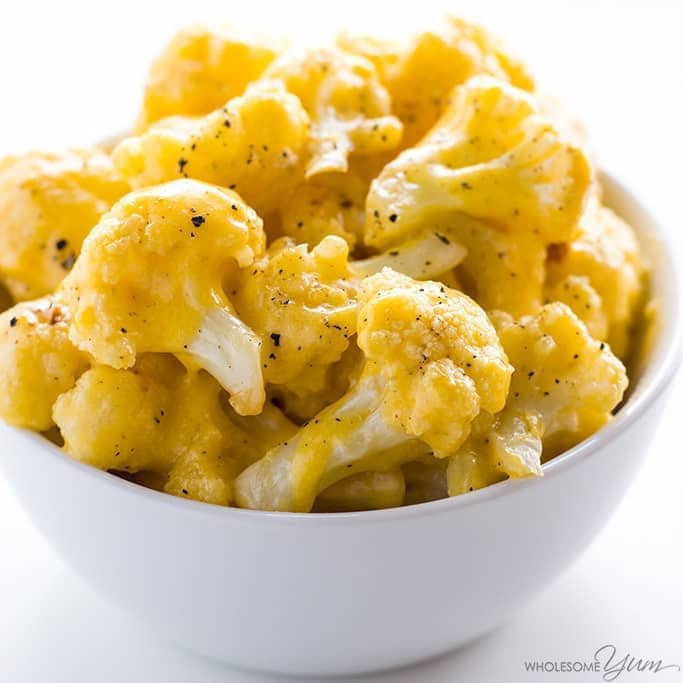

Keto Cauliflower

Rich, cheesy low carb mac and cheese will satisfy your cravings for macaroni!
If you’re looking for a low carb mac and cheese replacement, you may be surprised by this cauliflower mac and cheese (aka cauliflower and cheese) recipe! Yes, I know it’s not actual pasta, but this keto mac and cheese will totally fulfill that comfort food craving. Keto cauliflower mac and cheese is almost like the real thing, and so much healthier.
Ingredients
- 1 cauliflower head
- 3 tbsp butter
- salt/pepper
- 1 cup cheddar cheese
- 1/4 cup heavy cream
- 1/4 cup unsweetend almond milk
Steps
- Preheat the oven to 450 degrees F (232 degrees C). Line a baking sheet with foil or parchment paper.
- Melt 2 tablespoons (28 g) of butter. In a large bowl, toss together the cauliflower florets with the melted butter. Season with sea salt and black pepper.
- Arrange the cauliflower florets on the prepared baking sheet. Roast for about 10-15 minutes, until crisp-tender.
- Heat the cheddar cheese, heavy cream, milk, and remaining tablespoon of butter, stirring frequently. (You can do this on the stove in a double broiler, or in the microwave.) Heat until the cheese mixture is smooth. Be careful not to overheat or burn the cheese.
- Toss cauliflower with cheese sauce right before serving.